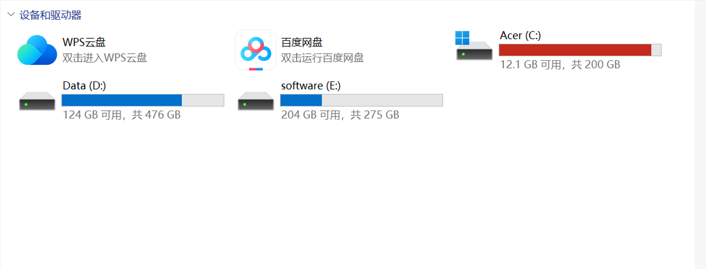
C 盘飘红是 Windows 用户的"老毛病"了——系统更新缓存、临时文件、桌面文件、微信聊天记录……不知不觉就把 C 盘塞得满满当当。换硬盘成本高，清理治标不治本，最一劳永逸的办法就是：从其他盘借空间给 C 盘。
📖 目录（点击展开）
📦 准备工作
⚡ 一句话概括：把 Windows 装进一个"休眠箱"里操作，这样 C 盘才不会被占用。
① 下载微 PE 工具箱
微 PE 工具箱——轻量级 PE（预安装环境）工具，干净无捆绑。
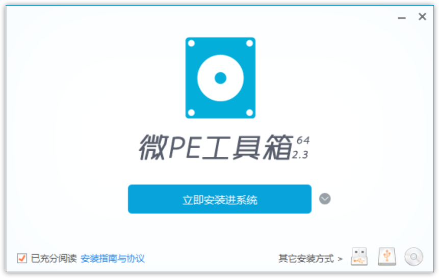
② 安装到系统
打开下载好的程序，点击 「立即安装进系统」，它会自动写入引导项。
③ 重启进入引导页面
安装完成后重启电脑，启动时会看到系统引导选择页面。
⏱ 注意：倒计时只有几秒钟，超时后会自动进入当前系统，盯紧屏幕快速选择！
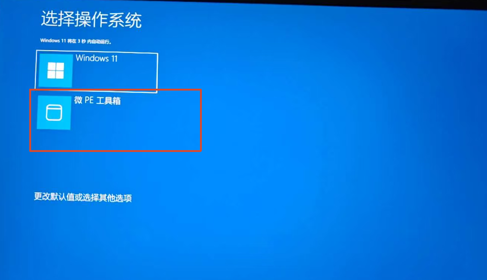
④ 进入 PE 环境
方向键选择 微 PE 工具箱，回车进入。
💡 为什么要进 PE？
进入 PE 环境后，你的 Windows 系统处于完全"休眠"状态——C 盘没有被任何进程占用，此时才能安全地调整分区大小。这就像一个手术，病人必须麻醉后才能动刀。其他分区工具也是同样的原理。
🛠️ 开始扩容
进入 PE 后，桌面会自动弹出工具菜单，点击 「分区助手」。
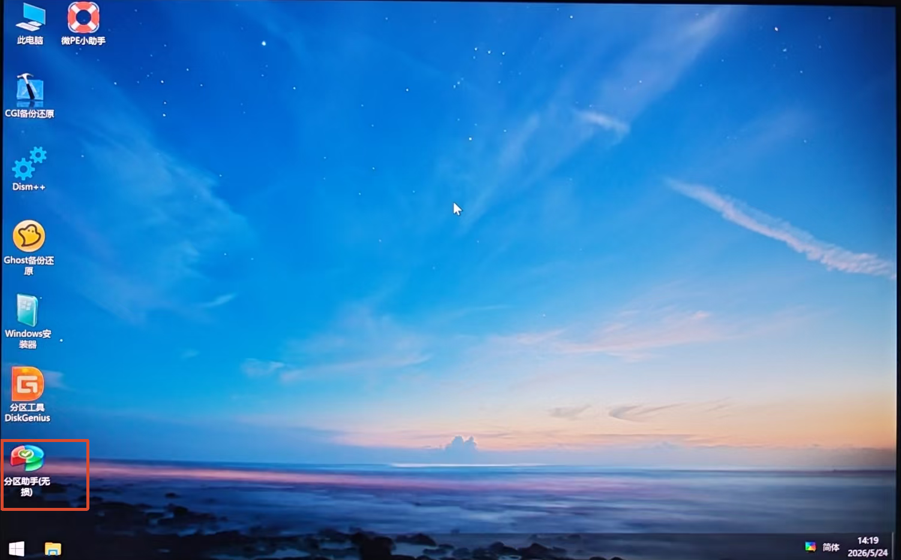
第一步 · 查看磁盘布局
分区助手打开后，你会看到所有磁盘分区的直观布局。确认一下哪个盘有空余空间可以"支援"C 盘。
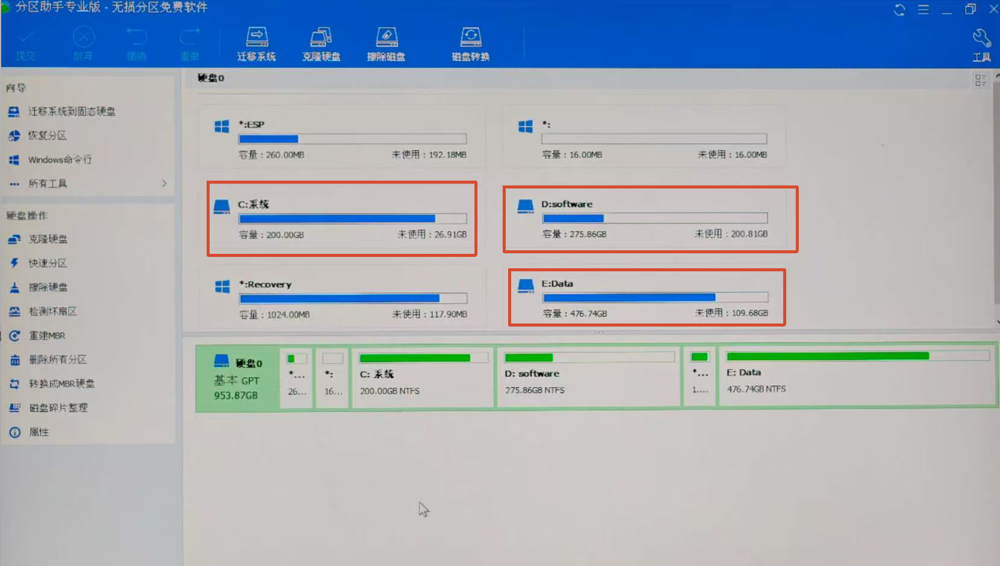
第二步 · 选择要缩小的盘
这里以 Software（D 盘） 为例，我们要从 D 盘"切"出一部分空间给 C 盘。
💡 选哪个盘好？
- ✅ 优先选 空间充裕、且不常用的大盘
- ❌ 尽量别动系统恢复分区或 EFI 分区
第三步 · 调整分区
右键点击 D 盘 → 「调整分区」。
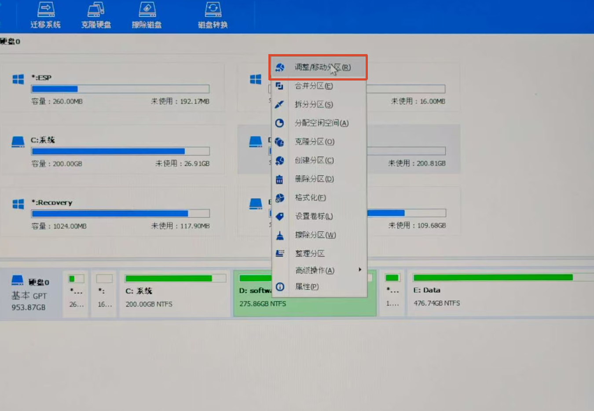
第四步 · 缩小盘符
在弹出的窗口中，拖动滑块或直接输入数值，决定从 D 盘分出多少空间。
✅ 示例：你想给 C 盘扩充 50GB，就在这里缩小 50GB
⚠️ 注意：缩小的数值不要超过 D 盘当前已用空间，否则会报错。
确认无误后点击 「确定」。
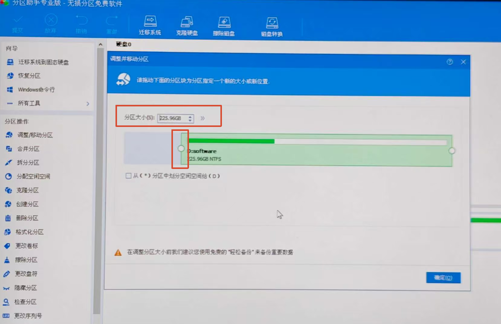
第五步 · 合并给 C 盘
此时你会看到 D 盘旁边多了一块 「未分配空间」。
| 步骤 | 操作 |
|---|---|
| 1 | 右键点击 C 盘 → 「调整分区」 |
| 2 | 将滑块拖到 最右侧，把全部未分配空间并入 C 盘 |
| 3 | 点击 「确定」 |
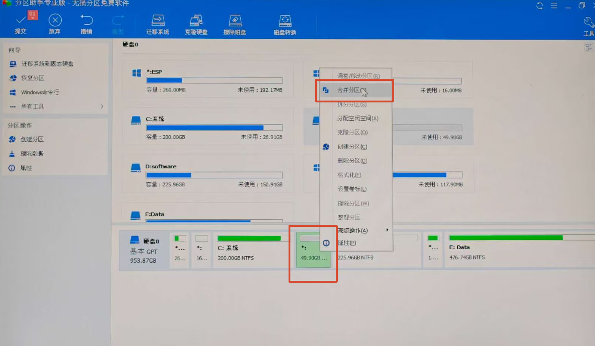
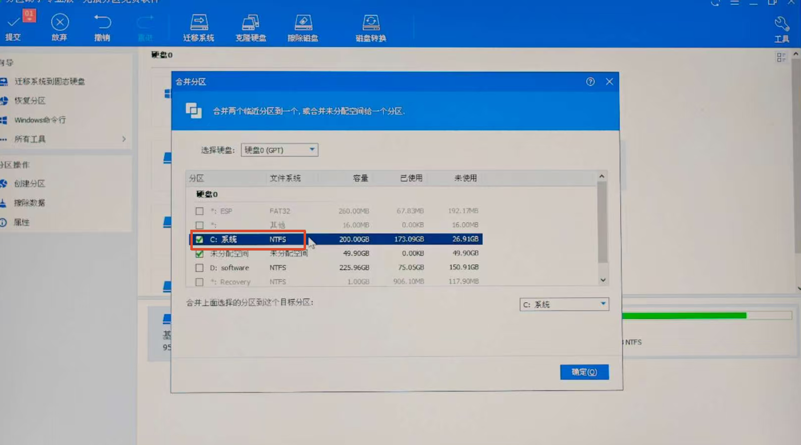
第六步 · 提交任务
点击左上角的 「提交」。
⚠️ 关键提醒
前面所有的调整都只是**“计划”**，并没有实际生效。
只有点击「提交」后，系统才会真正执行分区操作。确认无误再提交！
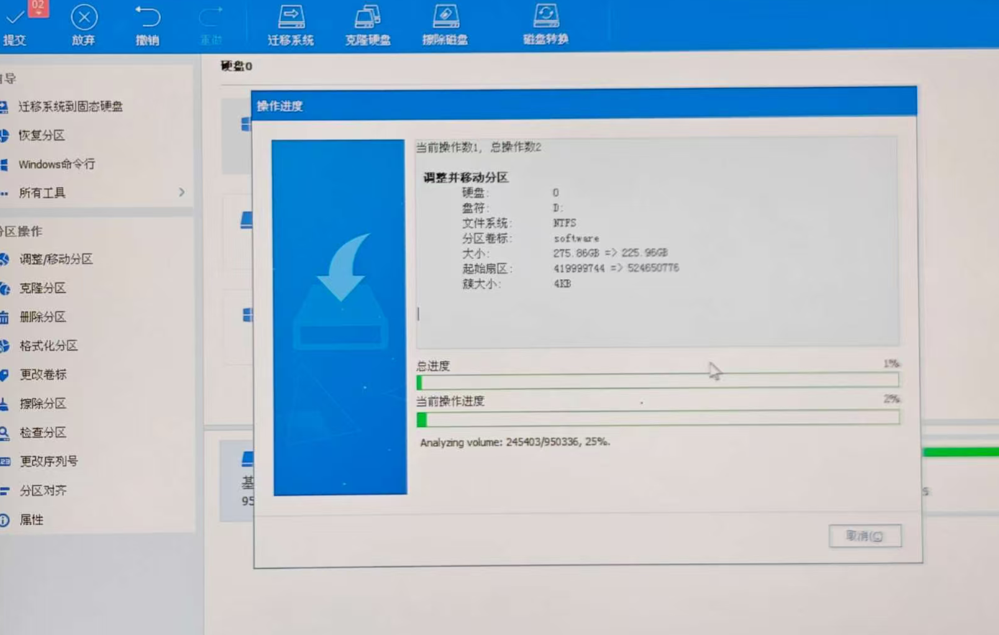
第七步 · 等待执行
分区助手会开始执行调整，这个过程可能需要几分钟到十几分钟，具体取决于你的磁盘大小和速度。
| ⚠️ | 🔴 千万不要中途断电或强制关机！ |
|---|---|
| 否则可能导致分区表损坏，数据丢失 | |
| 建议插上电源适配器（笔记本用户） | |
| 去泡杯茶，耐心等它跑完 🍵 |
第八步 · 完成 🎉
看到成功提示后，扩容就完成了！
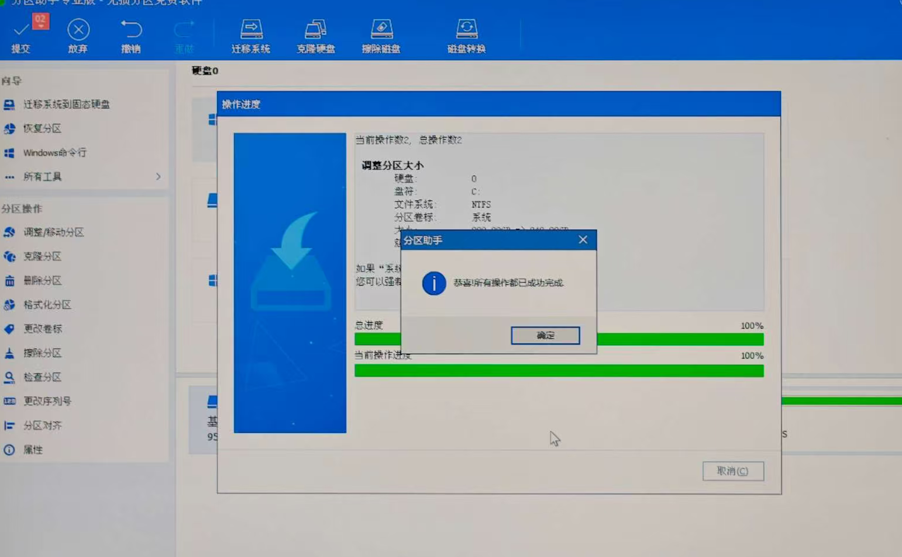
🚀 重启 & 收尾
| 顺序 | 操作 |
|---|---|
| ① | 点击 「重启」 |
| ② | 在引导界面选择你的 Windows 系统 正常进入 |
| ③ | 打开 此电脑，确认 C 盘空间已经变大 ✅ |
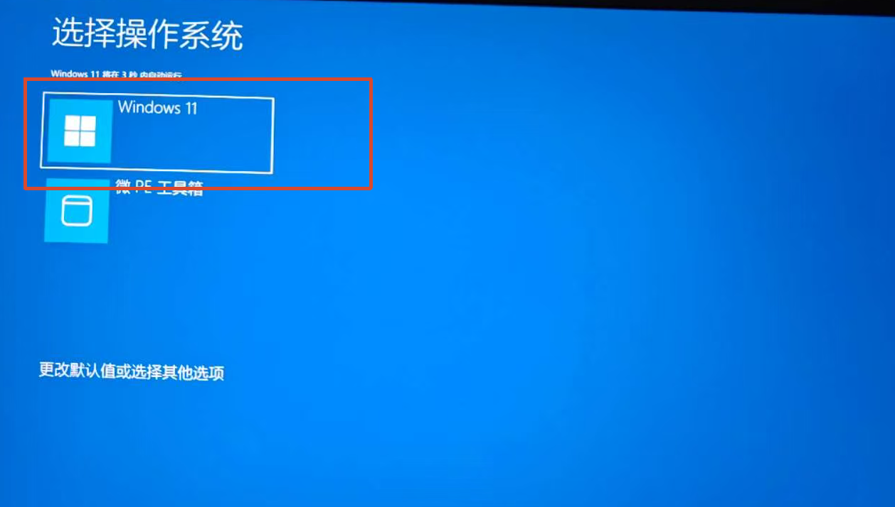
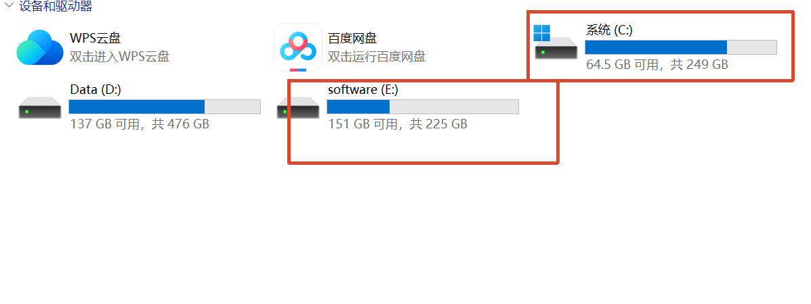
🧹 最后一步：如果你不想每次开机都看到系统选择界面，打开 微 PE 工具箱 → 「卸载」 即可恢复如初。
📌 小提示
| 场景 | 建议 |
|---|---|
| 🟢 C 盘空间太小（< 30GB） | 建议至少扩充到 80 ~ 100GB |
| 🟡 D 盘也没有多余空间 | 清理 D 盘，或外接硬盘转移大文件 |
| 🔴 操作前担心数据丢失 | 强烈建议先备份重要文件！ 虽然分区助手很稳定，但小心驶得万年船 |
✨ 以上就是完整的 C 盘扩容教程，希望你的电脑从此远离"飘红"！